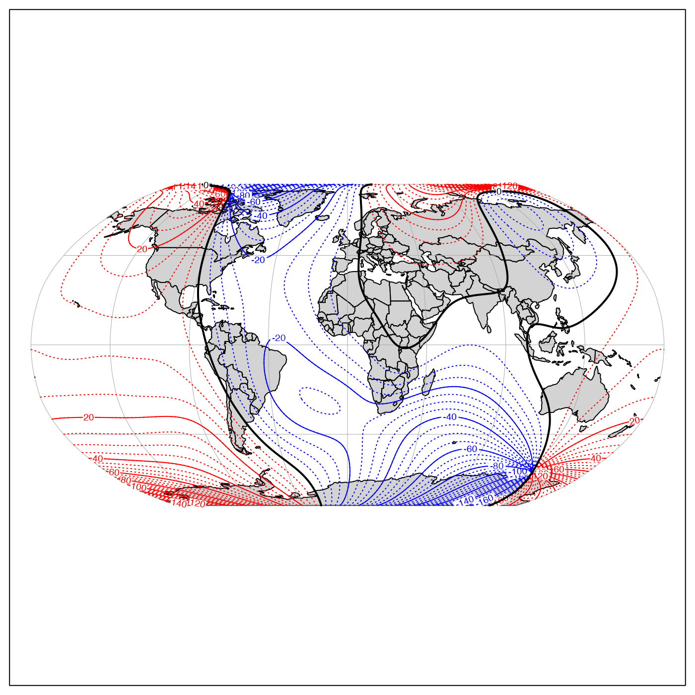
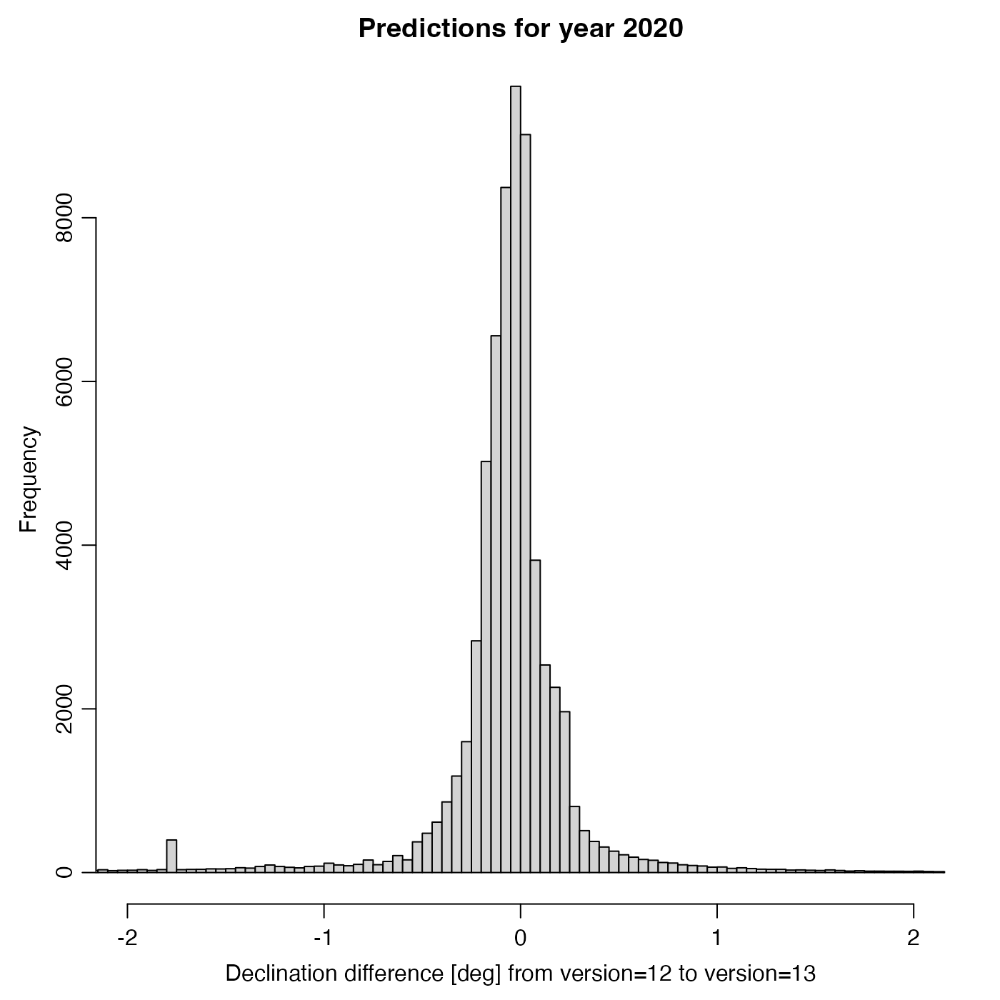
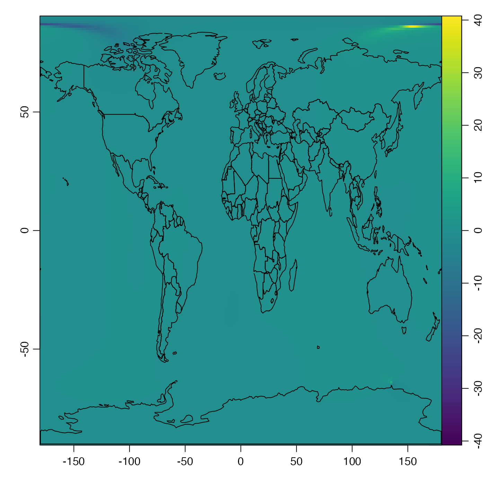

Implements the 12th and 13th generations of the International Geomagnetic Reference Field (IGRF), based on a reworked version of a Fortran program downloaded from a NOAA website (see reference 1).
magneticField(longitude, latitude, time, version = 13)
| longitude | longitude in degrees east (negative for degrees west). The dimensions must conform to lat. |
|---|---|
| latitude | latitude in degrees north, a number, vector, or matrix. |
| time | The time at which the field is desired. This may be a
single value or a vector or matrix that is structured to match
|
| version | an integer that must be either 12 or 13, to specify
the version number of the formulae. Note that 13 became the default
on 2020 March 3, so to old code will need to specify |
A list containing declination, inclination, and
intensity.
The code (subroutines igrf12syn and igrf13syn) seem to have
been written by Susan Macmillan of the British Geological Survey. Comments
in the source code igrf13syn (the current default used here)
indicate that its coefficients were agreed to in
December 2019 by the IAGA Working Group V-MOD. Other comments in that code
suggest that the proposed application time interval is from years 1900 to 2025, inclusive,
but that only dates from 1945 to 2015 are to be considered definitive.
For about a decade, magneticField used the version 12 formulae provided
by IAGA, but the code was updated on March 3, 2020, to version 13. Example
3 shows that the differences in declination are typicaly under 2 degrees
(with 95 percent of the data lying between -1.7 and 0.7 degrees).
The underlying Fortran code for version 12 is from igrf12.f, downloaded the NOAA
website (https://www.ngdc.noaa.gov/IAGA/vmod/igrf.html) on June 7,
That for version 13 is igrf13.f, downloadd from the NOAA website
(https://www.ngdc.noaa.gov/IAGA/vmod/igrf.html on March 3, 2020.
Witze, Alexandra. “Earth's Magnetic Field Is Acting up and Geologists Don't Know Why.” Nature 565 (January 9, 2019): 143. https://doi.org/10.1038/d41586-019-00007-1.
Other things related to magnetism:
applyMagneticDeclination()
#> $declination #> [1] -16.94125 #> #> $inclination #> [1] 66.85609 #> #> $intensity #> [1] 51501.39 #># 2. World map of declination in year 2000. # \donttest{ data(coastlineWorld) par(mar=rep(0.5, 4)) # no axes on whole-world projection mapPlot(coastlineWorld, projection="+proj=robin", col="lightgray")# Construct matrix holding declination lon <- seq(-180, 180) lat <- seq(-90, 90) dec2000 <- function(lon, lat) magneticField(lon, lat, 2000)$declination dec <- outer(lon, lat, dec2000) # hint: outer() is very handy! # Contour, unlabelled for small increments, labeled for # larger increments. mapContour(lon, lat, dec, col='blue', levels=seq(-180, -5, 5), lty=3, drawlabels=FALSE)mapContour(lon, lat, dec, levels=180, col='black', lwd=2, drawlabels=FALSE) mapContour(lon, lat, dec, levels=0, col='black', lwd=2)# } # 3. Declination differences between versions 12 and 13 # \donttest{ lon <- seq(-180, 180) lat <- seq(-90, 90) decDiff <- function(lon, lat) { old <- magneticField(lon, lat, 2020, version=13)$declination new <- magneticField(lon, lat, 2020, version=12)$declination new - old } decDiff <- outer(lon, lat, decDiff) decDiff <- ifelse(decDiff > 180, decDiff - 360, decDiff) # Overall (mean) shift -0.1deg t.test(decDiff)#> #> One Sample t-test #> #> data: decDiff #> t = -21.794, df = 65340, p-value < 2.2e-16 #> alternative hypothesis: true mean is not equal to 0 #> 95 percent confidence interval: #> -0.10399320 -0.08683188 #> sample estimates: #> mean of x #> -0.09541254 #># View histogram, narrowed to small differences par(mar=c(3.5, 3.5, 2, 2), mgp=c(2, 0.7, 0)) hist(decDiff, breaks=seq(-180, 180, 0.05), xlim=c(-2, 2), xlab="Declination difference [deg] from version=12 to version=13", main="Predictions for year 2020")#> 2.5% 97.5% #> -1.6695352 0.7159345# Note that the large differences are at high latitudes imagep(lon,lat,decDiff, zlim=c(-1,1)*max(abs(decDiff)))# }